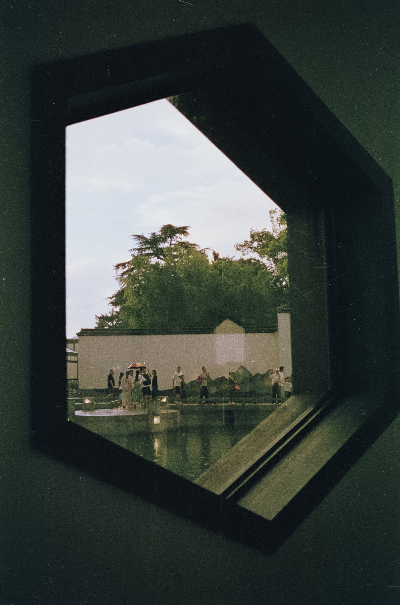
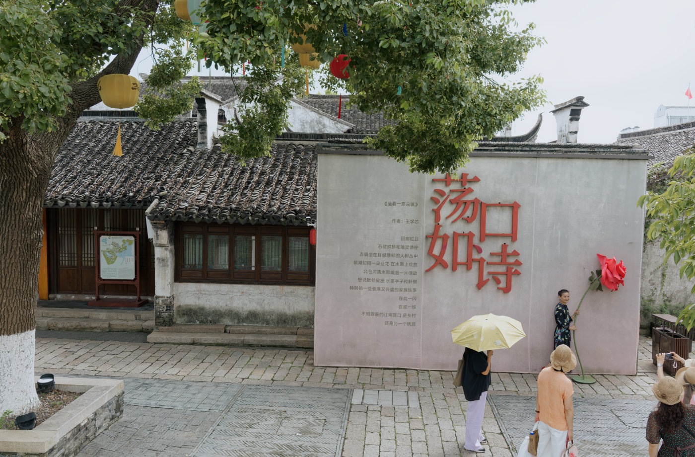
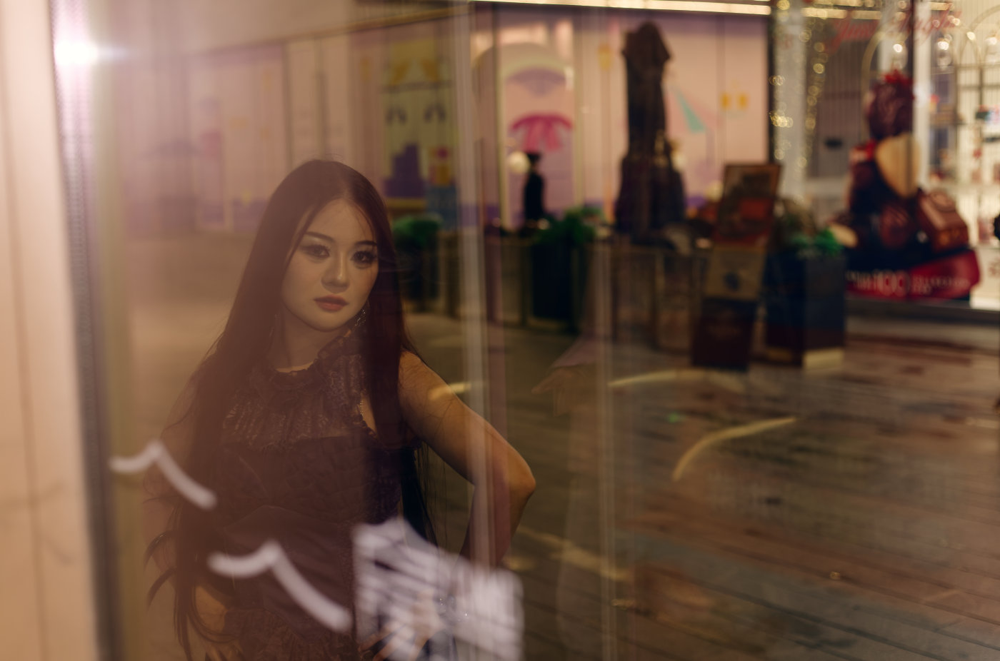

从照片到纸刊海报：一次 AI 视觉蒸馏实验
尝试两个 Codex Skill，将人物照片重新创作为纸刊插画与极简编辑海报，记录过程与视觉差异。
Personal Archive
这里保存一些照片、文字、器材折腾，以及我对日常生活的观察。摄影是入口，文字是线索，最后留下来的大概是一个人的观看方式。

尝试两个 Codex Skill，将人物照片重新创作为纸刊插画与极简编辑海报，记录过程与视觉差异。

寿桃湖畔，芦苇、湖水与深青衣色构成一段清冷的秋日行旅。镜、剑、长卷与红纱依次出现，让人物在静与动之间留下可回望的线索。

一次寻常的荡口古镇漫步，因为几处开放的旧宅而有了新的方向。从街边的日常，到老宅里的门窗、陈设与光影，这组照片记录了我在熟悉的古镇中重新发现细节的过程。
记录使用 DaVinci Resolve 制作摄影调色 LUT，并在 DxO PhotoLab 中应用的工作流程，涵盖 RAW 基础调整、TIFF 导出、色彩管理设置及 LUT 导入。

一次仓街夜景人像拍摄。从坚持自然光到重新尝试闪光灯，记录一次久违的闪光摄影体验，以及佳能 5D 与 50mm 标头带来的不同感受。
A personal archive of photographs, notes and curiosities.